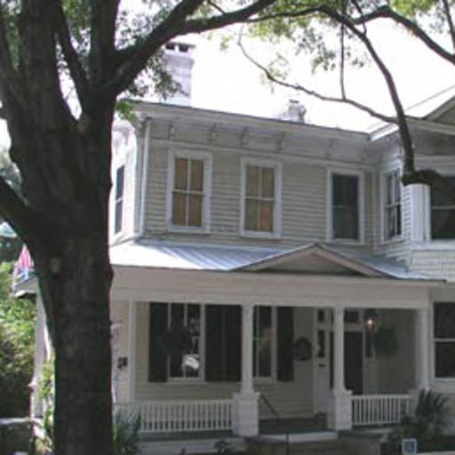
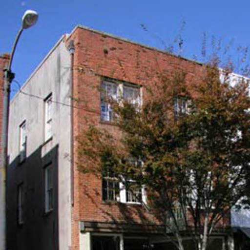
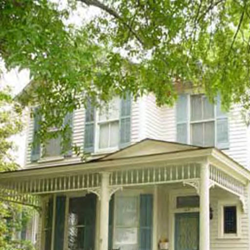
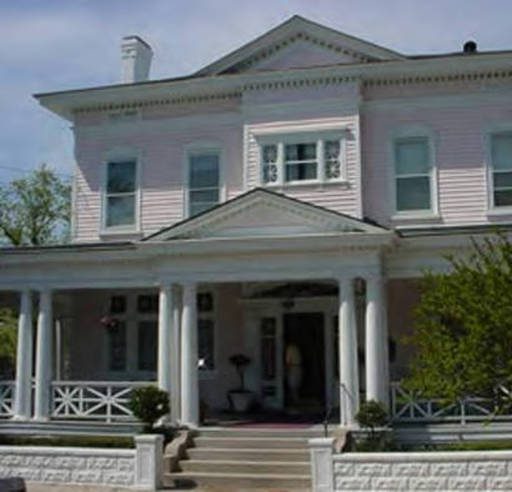
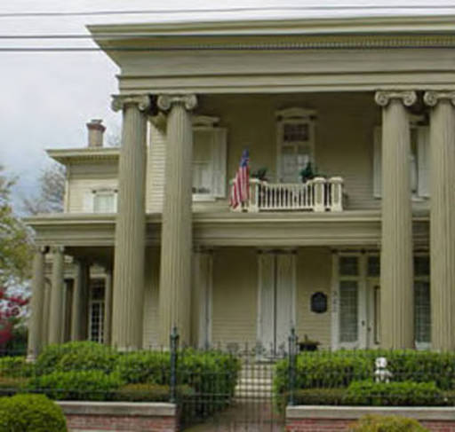
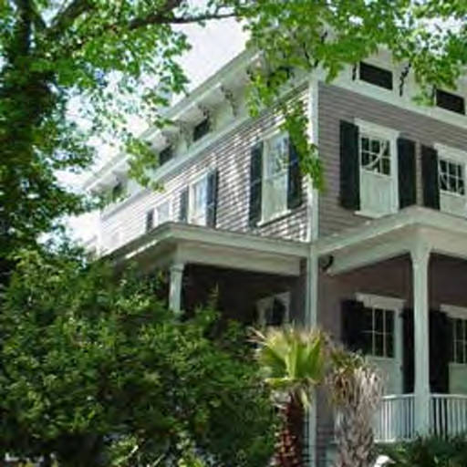

| Picture |
Name |
Address |
 | Addie P McClammy House | 507 S. 2nd St |
| Adelaide P. McClammy House | 115 Castle St |
 | Adrian House | 212 Orange St |
 | Ahrens Building | 110-112 Market St |
| Alexander Hall House | 111 Church St |
| Allen-Woodard House | 406 S. 3rd St |
 | Andrew Smith House | 116 Nun St |
| Annie H Winstead House | 415 Dock St |
|  | Baldwin-Latimer-Jordan House | 127 S. 3rd St |
 | Ballard-Potter-Bellamy House | 121 S. 2nd St |
| Baptist Hill House | 305 S. Front St |
| Barker-OConnor House | 517 S. Front St |
| Bell House | 306 S. 4th St |
| Bellamy Mansion | 503 Market St |
| Benjamin W. Beery House | 202 Nun St Wilminton, NC |
 | Benson House | 206 Nun St |
 | Benton House | 322 S. 4th St |
| Blake House | 202 Castle St |
| Blaney-Crowley House | 508 S. 3rd St |
| Bowdoin-Marshall House | 411 Nun St |
|  | Bradley-Miller Building | 120 S. Front St |
 | Brady House | 408 Church St Wilmingtin, NC |
| Brafley-Green Building | 107-109 Market St |
| Bridgers House | 100 S. 3rd St |
 | Bridgers-Townes House | 503 S. 3rd St |
 | Bridgers-Watters House | 505 S. 3rd St |
 | Brink-Goodman House | 120 Castle St |
| Brockett-Barker-Bell House | 118 Church St |
 | Brown-Lord House | 300 S. Front St |
 | Burgwin-Wright House | 224 Market St |
 | Burriss-Meier House | 412 Church St |
 | Burruss-Poisson House | 318 S. 3rd St |
| Calder-Thorpe | 225 S. Water St |
| Cameron Dixon House | 6 Church St |
| Cameron-Hollman House | 512 Surry St |
 | Canady House and Store | 402 Church St |
| Captain John Harper House | 311 S. Front St |
| Captain Sanders House | 106 Church St |
 | Cassidey Harper House | 1 Church St |
 | Chadbourn House | 117 Nun St |
 | Chadbourne-Donnell House | 214 Nun St |
 | Chapman House | 210 Church St |
 | Charles W. Worth House | 412 S. 3rd St |
| Charoltte Sampson Johnson House | 421 S. 4th St |
|  | Chestnutt House | 108 S. 4th St |
| Clark House | 210 Nun St |
| Coin-Rogers House | 220 S. 3rd St |
 | Cook-Carter House | 110 Castle St |
 | Cook-Matthews House | 108 Castle St |
 | Cowan House | 208 S. 2nd St |
| Cranmer House | 207 S. 4th St |
 | Cumming House | 115 Church St |
 | Cumming-Duls House | 120 Nun St |
 | Cumming-Quelch-Baker House | 418 S. 2nd St |
| Cumming-Sneeden House | 419 S. 4th St |
| Cumming-Taylor House | 308 Church St |
| Daggett-Taylor House | 407 S. Front St |
 | Darby-Munson House | 303 S. 2nd St |
 | David Reid Murchison House | 305 S. 3rd St |
 | Davis-Warshauer House | 209 S. 2nd St |
| Dawson Building | 19 Market St |
| DeRosset House | 23 S. 2nd St |
| DeRosset-Farriss House | 312 Ann St |
 | Dickinson House | 316 S. 2nd St |
| Donald MacRae House | 23 S. 3rd St |
| Dr. A.M. Baldwin House | 3 S. 4th St |
 | Dr. Anderson Office | 104 Orange St |
| DuBois-Boatwright House | 14 S. 3d St |
 | Dudley-Chadbourne House | 323 S. Front St |
 | E. Payson Willard House | 15 S. 4th St |
 | Eakins House | 507 S. 4th St |
 | Edward P. Bailey House | 313 Ann St |
 | Edward Savage House | 120 S. 3rd St |
 | Edward Savage Latimer House | 208 S. 3rd St |
 | Elliott-Brown House | 218 S. 2nd St |
 | Empie-Poisson House | 311 Castle St |
| Evans-Mercer-Tusch House | 215 S. 2nd St |
| Fanning House | 206 Orange St |
 | First Baptist Church | 421 Market St |
| Forshee-Sprunt House | 410 S. Front St |
| Frederick J. Lord House | 308 S. Front St |
| French-King House | 103 S. 4th St |
| Gause-Bolles House | 413 Orange St |
 | Gause-Burr House | 315 S. 2nd St |
| George French House Kitchen | 408 Dock St |
| Gooding-Lawton-Grant House | 210 Ann St |
| Gore-Martin House | 11 Church St |
 | Governor Dudley Mansion | 400 S. Front St |
 | Gwaltney-Martin House | 406 Orange St |
| Gwyer-Walker House | 302 S. 2nd St |
| Hall-Kelly House | 104 Church St |
| Hankins-Bannerman House | 314 Ann St |
 | Hansen House | 114 Nun St |
 | Harper-Hundley House | 509 S. Front St |
 | Harper-Newbold House | 5 Church St |
| Hart Carriage House | 309 Cottage Ln |
| Hasell-Parsley House | 302 S. 3rd St |
 | Heide-Futch House | 411 S. 2nd St |
| Henry Latimer House | 202 S. 3rd St |
|  | Henry Russell Savage House | 114 S. 3rd St |
| Hogg-Anderson House | 110 Orange St |
 | Holladay-Whitehead House | 401 S. 3rd St |
|  | Honnet House | 322 S. Front St |
 | Horace P. Munson House | 201 S. 4th St |
 | Howey-Wiard House | 224 S. 4th St |
| Huggins House | 7 S. 4th St |
 | J. W. Brooks Building | 18 S. Water St |
 | J. W. Murchison House | 316 S. 3rd St |
| Jewett-Shepard House | 317 S. 2nd St |
| John A. Taylor House | 409 Market St |
| John C. Bailey House | 219 S. 3rd St |
 | John S. Bellamy Building | 107-109 S. Front St |
 | Jones-Mitchell House | 111 S. 4th St |
| Joseph Loughlin House | 513 S. Front St |
| Kenly-Whitehead House | 405 S. 3rd St |
 | Kidder House | 308 Dock St |
 | King-Meares House | 326 S. 3rd St |
 | King-Thorpe House | 209 Nun St |
| L. W. Davis House | 109 Church St |
 | Larrington House | 418 S. 4th St |
 | Latimer-Waddell House | 218 S. 3rd St |
| Louis J. Poisson House | 308 S. 2nd St |
| Love-Morrison House | 321 S. 2nd St |
 | Lucy M. Giles House | 321 S. 3rd St |
| Mahler House | 217 Dock St |
| Mahler Office | 21 S. 2nd St |
 | Maria McKoy House | 510 S. 3rd St |
| Martha Munds House | 318 Ann St |
| Martin-Huggins House | 412 Market St |
| Mary Jane Langdon House | 408 Market St |
| Masonic Hall | 125-127 Market St |
 | McClammy-Powell House | 423 S. Front St |
 | McClellan Livery Building | 118 Dock St |
 | McGary-Worth House | 414 Orange St |
 | McGowan House | 507 S. Front St |
| McKay-Green House | 312 S. 3rd St |
| McRae House | 305 S. 2nd St |
 | Mitchell-Anderson House | 102 Orange St |
| Morse-Willard-Rhodes House | 211 Ann St |
 | Munson-Bessellieu House | 206 Ann St |
 | New Hanover County Courthouse | 24 N. 3rd St |
 | Newton-Milinor House | 420 S. 4th St Wilmingotn, NC |
| Northrop-Oldham House | 213 S. 3rd St |
| Ofiesh-Plisco Building | 103-105 S. Front St Wilmigton, NC |
 | Oldham-Allison Building | 12 Dock St |
 | Orrell-Yopp House | 307 Church St |
 | Parker-Saunders House | 401 S. Front St |
|  | Parsley House | 224 S. 3rd St |
| Peck House | 311 S. 3rd St |
 | Peyton Hoge House | 407 S. 3rd St |
| Philander Pearsall House | 314 S. Front St |
 | Purnell-Empier House | 319 S. Front St |
 | Quince Building | 5-7 S. Water St |
| Rankin & Martin Warehouse | 3 Ann St |
| Reaves-Hayes House | 520 S. 2nd St |
| Repiton Building | 108 Market St Wilmingotn, NC |
| Richard Langdon House | 314 Orange St |
| Riley-Moore House | 104 S. 4th St |
 | Salvation Army Building | 215 S. Front St |
 | Sebrell House | 214 S. 2nd St |
 | Seigler-Underwood Building | 116 S. Front St |
| Sloan-Powers House | 216 S. 2nd St |
 | Sprunt House | 411 S. Front Street |
| St. James Church | 125 S. 3rd St |
 | St. James Rectory | 125 S. 4th St |
 | St. Johns Lodge | 114 Orange St |
 | St. Thomas The Apostle Church | 208 Dock St |
 | Strange-Simmons House | 423 S. 4th St |
| Strausz House | 308 S. 3rd St |
 | Sutton-Burgwin House | 323 S. 4th St |
| Sutton-Howey House | 222 S. 4th St |
 | Taylor-West House | 208 Church St |
| Temple of Israel | 1 S. 4th St |
 | Thomas Smith House | 420 S. Front St |
 | Tileston School | 400 Ann St |
 | Trask-Brinson House | 415 S. 2nd St |
 | U. C. Ellis House | 116 Church St |
| W.I. Gore House | 410 Orange St |
 | Walker -Compos House | 112 Ann St |
 | Walker House | 114 Ann St |
 | Warren Building | 7 S. 2nd St |
 | Webb-Rankin House | 312 Dock St |
| Weedon House | 119 Church St |
| Wessel Hathaway House | 120 S. 5th St |
 | Wessel-Harper House | 508 S. Front St |
 | Westerman House | 112 Castle St |
| Wiggins House | 215 Ann St |
| Willard-Biggs House | 213 Ann St |
| Willard-West House | 17 S. 4th St |
 | William A. French House | 107 S. 4th St |
 | William A. Wilson House | 408 Nun St |
| William B. McKoy House | 402 S. 3rd St |
 | William B. Meares House | 416 S. Front St |
 | William Dick House | 113 Nun St |
 | William E. Worth House | 211 Orange St |
 | William Rand Kenan House | 110 Nun St Wilmignton, NC |
 | Williams-Holladay House | 117 S. 4th St |
 | Williams-MacMillan House | 118 S. 4th St |
 | Wilson Cottage | 620 S. 2nd St |
 | Wilson-Powell House | 412 Nun St |
| Woodus Kellum House | 313 Church St |
 | Wooster House | 20 S. 3rd St |
| Wright House, John M. | 207 Nun St |
| Wright-Murchison House | 315 S. 3rd St |
| Wright-Murphy House | 212 S. 2nd St |
| Yarborough House | 214 Church St |
| Z. W. Whitehead House | 211 S. 2nd St |
 | Zebulon Latimer House | 126 S. 3rd St |